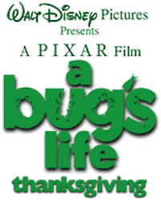
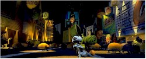
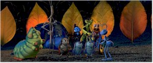
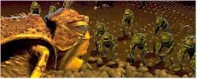

Contents | Features | Reviews | News | Archives | Store |
 |
|
| Movie Credits | Buy It! |
A Bug's Life
Review by Carrie Gorringe
Posted 25 November 1998
|  | Directed by John Lasseter; co-directed by
Andrew Stanton Starring the voices of Dave Foley,
Kevin Spacey, Screenplay by Andrew Stanton, |
Forget the concept of "Girl Power"; in animation circles at least, 1998 is the year of "Insect Power." We’ve all seen Antz and felt the urge to stock up on Black Flag foggers, the idea of invasion by thousands of ants all sounding and acting like Woody Allen being much worse than any infestation by the garden-variety variety (or maybe you need the foggers along with the collected works of Freud and a soupV on of Schopenhauer for true effectiveness…). Now, the pioneers of the completely computerized animation form who exposed the inner lives of toys three years ago in the ironically whimsical Toy Story (especially director Lasseter) are back with their sophomore effort, A Bug’s Life. A tale of self-actualization and warfare, as an eccentric inventor ant named Flik (Foley) attempts to gain acceptance within his group while at the same time fending off the threats of a gang of grasshopper shakedown artists led by the nasty Hopper (a wonderful, low-key turn from the always wonderful, low-key Spacey), A Bug’s Life has to tread in the path of Dreamworks’ Antz, which is both an advantage and a disadvantage: the new film has, in essence, been presold to the audience, but it also must overcome the stigma of being second in the race, and hence, appearing to be the imitator.
The idea of an entomological duo potentially selling lots of movie tickets is extremely ironic to anyone familiar with the travails of animation history. Way back in 1941, the prototype for these two films, Mr. Bug Goes to Town (the story of an insipidly--inspired grasshopper named Hoppity, and his experiences in the big, sinful city), failed so dismally at the box office that Paramount was able to seize control of the Fleischer Studios (the home and incubator of Koko the Clown and Betty Boop, and animators of the best Popeye cartoons) and fire the Fleischer brothers, thereby consigning yet another group of great animation idea men to the archives. Given this dire set of circumstances, it’s surprising that anyone, let alone two different studios would have the courage to take on this "Typhoid Mary" of subject matter. If a report from one of the latest issues of Entertainment Weekly is to be believed, however, the existence of two movies, both containing antz -- I mean, ants -- as main characters is more than mere coincidence. When Dreamworks co-founder Jeffrey Katzenberg left Disney’s animation unit in a snit several years and one lawsuit ago, he was apparently quite aware than Disney had Bug’s Life in the works and decided to trump his former employer in more ways than one; not only are the plot and characters almost identical, but the release date of Antz was moved back to allow it to leave the gate first. Thus, one should never discount the possibility that an executive deprived of profit participation in The Lion King is several orders of magnitude worse than Congreve’s woman scorned.
The real question on everyone’s minds, however, is not how well the films have performed at the box office (Antz has indicated that the market exists). With two insect films going mandible-to-mandible at the theatres, what they really want to know is this: is the latest one also a must-see? The answer is a most heartfelt affirmative. In fact, Bug’s Life, for this critic’s money, is a superior film in every respect to Antz (which, more often than not, is nothing more than an animated Woody Allen movie). The animation in Bug’s Life, has smoother lines and possesses greater fluidity; when characters "squash" and "stretch", (or, in ordinary parlance, "contract" and "expand") they really "squash" and "stretch". Moreover, there has not been such an emphasis in character modeling in Bug’s Life that the scenery has been given short shrift; there is a river near Flik’s anthill rendered in the scale of what the Grand Canyon would be to a human, and the attention to detail is almost painfully exquisite, but never excessively so. This film is so skillfully crafted that, in all but a few instances, it has the appearance of hand-drawn animation of that coming from 1930s-1940s Disney or Warner’s Termite Terrace (high praise, indeed). By comparison, the animation in Antz has the obvious hallmarks of excessive reliance on technology, among them a harsh, glossy look that tends to intrude upon and upstage the story itself (not a difficult achievement, since the story line of Antz was weakly written to the point of non-existence). One doesn’t like to be cynical about the intentions of filmmakers, but, in comparing the two films, it’s almost as if the producers of Antz sat around saying, "Fine, we’ve got Woody’s, Sharon’s and Sly’s voice-overs, some snazzy animation and that’s enough for the audience." There’s a real difference, though often not much of one, between mere flash and legitimate craft, and Bug’s Life places itself squarely in the latter category. Unfortunately for Dreamworks’s animation department, it has some seventy years of catching-up to do before it can reach a Disneyian level of quality.
If Bug’s Life is lacking in A-plus-level casting, in terms of industry heavyweights (though, to be honest, it does have an A-plus-level cast, in terms of talent), it compensates by combining superior technical skills with that most indeterminate of substances known as "heart", and there is no technological/artistic fault line running between Pixar and Disney. As Lasseter demonstrated with the playful nature of Toy Story, the techies have more in the box than binary code and, for that matter, any Disney animated film since and including Beauty and the Beast demonstrates the technical prowess of the Disney artists. The combination is unbeatable. You can see that respect for substance in the level of consideration that Lasseter and co. have given to anthropomorphic constructs. When the little ant princess, Dot, is under siege by the thuggish Hopper, her body and her gestures accurately mimic those of a toddler in terror; she whimpers and scrunches herself together in a protective posture that touches the audience, and convinces them that, at least for the duration of the film, she is real. The ability to create that sort of characterization through movement alone derives from a combination of instinct and experience, or, to put it another way, the result may appear to be instantaneous, but the skill set required to achieve it is not.
Bug’s Life is crammed to the hilt with visual and verbal gems, and delivers them in such a laconic, consciously throw-away, style, that you’ll want to see the film again to appreciate the craftsmanship that this film represents, well past its exoskeleton. The insect city that Flik visits in his attempts to find warriors as reinforcements against Hopper and his gang is nothing but a series of masterstrokes, visually speaking; never before has discarded refuse been crafted more convincingly into what Bugs Bunny would call "an unreasonable facsimile" of Fifth Avenue. During Flik’s adventures there, he encounters a mosquito asking for a "Bloody Mary, O-positive." The mosquito drinks it, then goes into a paroxysm of delight before keeling over; the whole scene is rendered with a gleeful abandon that would make Robert Clampett, if not quite Tex Avery, proud. Backgrounds and characters don’t merely co-exist in Bug’s Life; each expands and consolidates its strengths, enriching the other as it does so.
Moreover, there is an advantage to deemphasizing name brands over talent; namely, the script can’t rely upon well-worn, pre-sold personas to keep a pallid story line limping along, and, therefore, the dialogue and voice acting has to be superior, as they are. Spacey, Foley, et al. do utilize the personalities for which they are best known (Spacey as the cold-blooded manipulator, Foley as the earnest naif ), but the script allows them to expand the stereotypes beyond their boundaries, while keeping the resultant irony to an effective minimum, although the script is not afraid to take digs at other Disney films. In describing his extortionate demands for food to the helpless ants, and the threats he makes to back up the demands, Hopper describes his mafia-like position, with acid wit, as "a circle-of-life kind of thing." (Since Katzenberg was the executive in charge of The Lion King, one might wonder if this reference is a backhanded slap at him, but that’s probably stretching things too far -- or is it?). The beauty of these sly little touches is their ability to exist within the film without impairing its impact; you don’t need to understand them in order to understand or enjoy the film, but they certainly enrich your film-going experience if you have the powers for simultaneous identification.
Between loopy sensibilties (who else would have cast Phyllis Diller in the role of an ant queen?), caustic wit to keep the adults happy and a well-crafted storyline and an assortment of lovable characters to keep the children happy, A Bug’s Life deserves all the support it can get, and if you suffered through the ersatz Antz, you have an obligation to go and observe the mastery of the original.
Contents | Features | Reviews | News | Archives | Store
Copyright © 1999 by Nitrate Productions, Inc. All Rights Reserved.